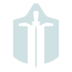

That is a wonderful question. The Syndicates are eight groups, seperate from the six factions mentioned before. They each have their own ideologies, and their own goals.
Tenno can complete different tasks and/or quests for the Syndicates, giving the player affinity towards each group. Do note that, however, due to their different goals many Syndicates are against each other, and will send Death Squads after the Tenno who choose to side with their enemies. Tenno will gain affinity in the form of Standing, a type of point representing the reputation earned within the Syndicate. Obtaining a certain amount of Standing lets the player rank up within the Syndicate.
Siding with a Syndicate offers many rewards such as exclusive Mods, weapons and cosmetics. Similarly, each Syndicate has its own ally, enemy and opposition. We will present the Syndicates in pairs, as allies. But before that, there are two Syndicates without allies, enemies or opposition, who we will present first.
| Syndicate | Syndicate |
|---|---|
| Conclave | Cephalon Simaris |
| Run by a man called Teshin, the Conclave serves as a Player Combat arena for the Tenno to practice their skills against what Teshin calls their ultimate enemy: themselves. He offers many Mods exclusive to the Conclave, as well as cosmetics and certain weapons and Warframes. Standing for this Syndicate is earned by participating in PvP battles. | Controlled by Simaris, an AI being, this Syndicate will require the Tenno to capture and “convert” certain targets. Targets are scanned with an item called the Synthesis Scanner. Scanning these targets provides Standing for the Cephalon Simaris. |
When the player is sided with a specific Syndicate, their reputation with that Syndicate's ally group will increase by 50%. However, reputation with the opposing Syndicate will be halved. Furthermore, the enemy of the main Syndicate the player sides with will not provide the player any reputation, whatsoever. They will also likely send Death Squads after you.
That being said, the following are the first two Syndicates that have allies, enemies and opposition. Remember that these two Syndicates are allied.
| Syndicate | Syndicate |
|---|---|
| Steel Meridian | Red Veil |
| A group led by a Grineer who deserted her post to form the Syndicate. He defends the remainder of the colonies, and following his own code, leads his group to defend the weak and helpless, leaving behind all their previous allegiances. | A group seeking to purge the world of the corruption they see, the Red Veil are willing to risk, even lose everything to ensure the ablance of the entire solar system. |
| Enemies with The Perrin Sequence, opposed by the New Loka | Enemies with the Arbiters of Hexis, opposed by the Cephalon Suda |
The second set of Syndicates are as follows. Remember that these two Syndicates are allied.
| Syndicate | Syndicate |
|---|---|
| Arbiters of Hexis | Cephalon Suda |
|  | |
| A group that believes in dicipline and training. They do not believe that Tenno are meant to just be warriors, but rather think that Tenno have greater hidden abilities that can be unlocked. | Led by what seems to be an AI, or some other being without much emotion, the Cephalon Suda desires knowledge and destruction. They hunt for the technology of the Orokin Era. Their leader, Suda, is likely a female, and does fit the bill for a piece of engineering. |
| Enemies with the Red Veil, opposed by The Perrin Sequence | Enemies with the New Loka, opposed by the Red Veil |
And the last set of Syndicates are the following. Remember that these two Syndicates are allied.
| Syndicate | Syndicate |
|---|---|
| The Perrin Sequence | New Loka |
| A group of former merchants belonging to the Corpus. They wish to bring order and prosperity to the world. They attempt to practice their trades without violence, instead of following the Corpus ideology of taking advantage of battle. | Worshippers of the Earth before the war, the New Loka believe that Earth was, is and forever will be the home of the people. They condemn the technology that has taken over, as well as the genetic tampering of the Grineer. |
| Enemies with the Steel Meridian, opposed by the Arbiters of Hexis | Enemies with the Cephalon Suda, opposed by the Steel Meridian |
Ally yourself with a Syndicate and obtain many rewards to help you on your journey. Remember that certain Syndicates provide Mods for certain Warframes, so be careful which group you pick!